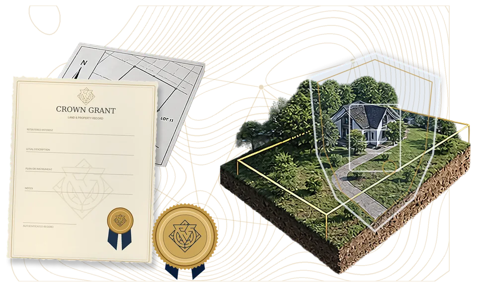

Certificate of Title
The current record and the predecessor references that begin your research.
For property owners who prefer to delegate
Start with the title, survey and Crown Grant. Have the property-specific research and documentation prepared for you, so your family has an organized record to return to.
Six defined work areas. Property-specific scope. One core package.

The current record and the predecessor references that begin your research.
The recorded parcel, its boundary information and its relationship to the title.
The original grant, including its terms, reservations and exceptions.
The short overview
Mark Smith explains where the research starts and what commissioning the documentation means.
Doing it yourself is a valid choice. This service is for people who prefer to have the work prepared.
Open the VSL page
The package
Research and preparation around your property and the available records. Review the written scope before payment.
Trace predecessor references through the available property records.
Locate and examine the original grant, its terms, reservations and exceptions.
Review the current record and the survey together, within the agreed scope.
Prepare a working boundary description from available records. This is not a new survey.
Prepare the acceptance documentation described in your written scope.
Prepare the notice documentation in the agreed scope; you complete the required signing, mailing or publication steps.
Two valid paths
Do it yourself
Retrieve the records, follow the predecessor references, review the grant and prepare the documentation yourself.
Commission the work
Have the six work areas prepared within a written, property-specific scope. You provide information and complete the required signing, mailing or publication steps.
A clear next step
No need to upload private documents to ask whether the service is a fit.
Understand the records, the six work areas and the price before deciding.
We review the province, ownership situation and requested scope. A call request is not yet a booking.
Review the written scope, taxes and terms. Approved payment follows; verified payment opens intake.
The service policy
30–90 days after we receive your required information or documents and confirm the scope.
Chain of Title includes five Certificates of Title, one Survey and one Crown Grant.
You request and pay for additional Certificates of Title and Survey copies directly from the Land Registry.
Cancellation and a refund are available within 14 days of purchase.
Full terms, applicable taxes and operational contact details need verification before launch. This preview does not accept payments.
Questions before you decide
The six work areas listed on this page, for one property. The price is reduced from $2,499 CAD, saving $700 CAD. Your written scope must confirm applicable taxes, record availability, any third-party costs and full service terms before payment.
Yes. You can retrieve and review the records yourself. The paid service is for owners who prefer to delegate the research and preparation. Requesting a fit call does not commit you to purchase.
The first step is a scope review. A call request is not a confirmed appointment. After an appointment is agreed, a calendar invitation can be provided for Microsoft Outlook, Google Calendar or Apple Calendar. This separate design preview does not send requests or book appointments.
Turnaround is 30–90 days after required information or documents are received and scope is confirmed. Chain of Title includes five Certificates of Title, one Survey and one Crown Grant. You request and pay for any additional title and survey copies directly from the Land Registry.
No legal outcome is promised. This is educational and documentation support, not legal advice, representation, surveying or title insurance. It does not resolve Aboriginal title, guarantee an Indigenous land patent, remove charges, prevent foreclosure or exempt property from tax. Seek appropriate professional advice for legal questions or deadlines.
Cancellation and a refund are available within 14 days of purchase. Review the full service terms and the written scope before paying. The published terms and operational contact details must be verified before launch.
Your next step
Tell us what you want help with. Review the scope before you decide, and choose whether to proceed.
Educational and documentation support only. A fit call is not a legal consultation or a commitment to purchase.